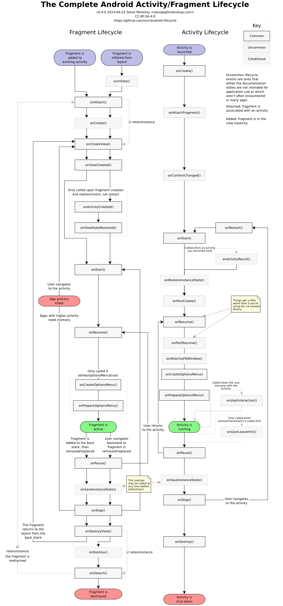

Android面试之《重要技能》总结。对于简单部分，只做总结。至于难点，将做进一步分析与记录。
四大组件
Android之四大组件：Activity、Service、BroadcastReceiver、ContentProvider。
Activity（活动）
（1）简介与特点：
- 作用于表现业务功能，即交互。有 UI 界面，不可处理耗时任务。
- Activity 间通过 Intent 通信。
- 必须在 AndroidManifest.xml 中注册配置，使用时系统才可识别。
（2）Activity 的 4 种状态：
- 运行中（running/active）：对应
onResume状态，位于栈顶，交互可见。 - 暂停（paused）：对应
onPause状态，可见+不可交互。 - 停止（stopped）：对应
onStop状态，不可见+不可交互。 - 销毁（destroyed）：对应
onDestroy状态，Activity 被销毁了。
对于理解 Activity 的 4 种状态，应结合 Post not found: ??? Activity 生命周期 来理解。
（3）Activity 的生命周期：
首先，献上官方的 Activity 生命周期图：

按顺序总结 Activiyt 各生命周期：
onCreateonReStartonStartonRestoreInstanceState：用于恢复数据。onResumeonSaveInstanceState：特别注意，onSaveInstanceState始终在onStop前（可能在onPause前或onPause~onStop，虽然测试大多数情况在onPause前）。用于保存数据。onPauseonStoponDestroy
Service（服务）
（1）简介与特点：
- 作用于后台服务，即无接触交互，但无（或说不依赖） UI 界面。不可处理耗时任务。
- 同 Activity 一样，必须在 AndroidManifest.xml 中注册配置，使用时系统才可识别。
- 虽说无 UI 交互，适于长期运行任务，但同样不能处理耗时任务（***切记，勿坑~***）。需要手动结合线程，将耗时任务放在线程中处理。否则，就会阻塞主线程。
（2）Service 的 2 种启动方式：
- ctxObj.startService：
- 此类服务可在后台无限期运行。
- 生命周期：
onCreate -> onStartCommand -> onDestroy- 多次
startService，只会执行一次onCreate（++共享一个实例++），但会多次执行onStartCommand。- 因启动它的组件（如Activity）与 Service 没有关联，停止需要手动调用
stopService或stopSelf。
- ctxObj.bindService：
- 此类服务跟随绑定组件（如
Activity）的生命周期，除非中途手动unbindService才会提前停止。- 生命周期：
onCreate -> onBind -> onUnbind -> onDestroy- 多次
bindService，只会执行一次onCreate 和 onBind（++共享一个实例++）。- 调用
unbindService后，若该 service 没有与其它 client 绑定时，才会真正地 destroy 掉（Service-Client：1-N，若 Client 还有一个在绑定着该 Service，其就不会真正销毁，除非到最后一个关联者 Client 解绑不再使用后。）
BroadcastReceiver（广播接收者）
（1）简介与特点：
- 广播接收器，是 Android 中的一种轻量级消息传输-响应机制。
- 可分静态注册与动态注册。
（2）5大类广播：
- 普通广播（Normal Broadcast）
- 系统广播（System Broadcast）
- 有序广播（Ordered Broadcast）
- 粘性广播（Sticky Broadcast）
- App应用内广播（Local Broadcast）
- 普通广播（Normal Broadcast）
注：是一种全局广播，哪怕不在同一App，只要监听相同的action也会收到！推荐使用LocalBroadcast！
Normal Broadcast 的使用：
sendBroadcast(Intent)
Normal Broadcast 的特点：
- 此类广播对于所有广播接收器均可接收。
- 同一级别的接收器接收顺序不确定。
- 接收器不能对广播进行处理或修改。
- 接收器不能截断广播，仍继续传播。
- 系统广播（System Broadcast）
系统内置许多广播，只要是涉及手机基本操作都有。如：电话、短信、电量、开机、网络变化、拍照等，都会发出相应广播。常见系统广播 action 有：
| 操作 | action |
|---|---|
| 网络变化 | android.net.conn.CONNECTIVITY_CHANGE |
| 开关飞行模式 | Intent.ACTION_AIRPLANE_MODE_CHANGED |
| 充电时或电量变化 | Intent.ACTION_BATTERY_CHANGED |
| 电量充足时（即从低变化到饱满状态会发出广播） | Intent.ACTION_BATTERY_OKAY |
| 系统启动完成后（只广播一次） | Intent.ACTION_BOOT_COMPLETED |
| 按下拍照时的拍照按键（硬件按键） | Intent.ACTION_CAMERA_BUTTON |
| 锁屏 | Intent.ACTION_CLOSE_SYSTEM_DIALOGS |
| 设备设置被更改（如：语言Locale、方向Orientation） | Intent.ACTION_CONFIGURATION_CHANGED |
| 插入耳机时 | Intent.ACTION_HEADSET_PLUG |
| 未正确移除SD卡（正确步骤：设置-SD卡和设备内存-卸载SD卡） | Intent.ACTION_MEDIA_BAD_REMOVAL |
| 插入外部存储装置（如：插入SD卡） | Intent.ACTION_MEDIA_CHECKING |
| 成功安装APK | Intent.ACTION_PACKAGE_ADDED |
| 成功卸载APK | Intent.ACTION_PACKAGE_REMOVED |
| 屏幕被关闭 | Intent.ACTION_SCREEN_OFF |
| 屏幕被打开 | Intent.ACTION_SCREEN_ON |
| 关闭系统时 | Intent.ACTION_SHUTDOWN |
| 重启设备 | Intent.ACTION_REBOOT |
监听这些系统广播太简单了，只需注册相关的action即可。
- 有序广播（Ordered Broadcast）
Ordered Broadcast 的使用：
sendOrderedBroadcast(Intent)
Ordered Broadcast 的特点：
- 有序，体现在接收器
intent-filter的priority取值（范围：[-1000,1000]），优先级与设值成正比。- 同一级别（priority相同）的接收器接收顺序不确定。
- 高优先级（high-priority）接收器能对广播进行处理或修改。在
onRecieve中调用setResultExtras(Bundle)即可，后续低优先级（low-priority）接收器在onReceive中调用getResultExtras(Bundle)获取被修改过的广播内容。若仍用getExtras()的话，取到的仍是源头广播。- 高优先级（high-priority）接收器能截断广播（在
onReceive调用abortBroadcast()即可！），阻止继续传播。
示例：
// OrderBroadcat例子：
//
// 1. 自定义MyBroadcastReceiver1
public class MyBroadcastReceiver1 extends BroadcastReceiver {
@Override public void onReceive(Context context, Intent intent) {
String action = intent.getAction();
String data = intent.getStringExtra("data");
Log.v("App", String.format("action:%s, data:%s, context: %s", action, data, context));
Bundle bundle = null != intent.getExtras() ? intent.getExtras() : new Bundle();
bundle.putString("data", "老子修改过的data");
setResultExtras(bundle);
}
}
// 自定义MyBroadcastReceiver2
public class MyBroadcastReceiver2 extends BroadcastReceiver {
@Override
public void onReceive(Context context, Intent intent) {
String action = intent.getAction();
String data = intent.getStringExtra("data");
Log.v("App", String.format("[2]action:%s, data:%s, context: %s", action, data, context));
Bundle b = getResultExtras(false);
data = b.getString("data");
Log.v("App", String.format("[2]action:%s, data:%s, context: %s", action, data, context));
Log.v("App", String.format("[2]bundle1:%s, getResultExtras:%s", intent.getExtras(), getResultExtras(false)));
b.putString("data", "二老子修改过的data");
setResultExtras(b);
//abortBroadcast();//截断继续广播
}
}
// 自定义MyBroadcastReceiver3
public class MyBroadcastReceiver3 extends BroadcastReceiver {
@Override
public void onReceive(Context context, Intent intent) {
String action = intent.getAction();
String data = intent.getStringExtra("data");
Log.v("App", String.format("[3]action:%s, data:%s, context: %s", action, data, context));
Bundle b = getResultExtras(false);
data = b.getString("data");
Log.v("App", String.format("[3]action:%s, data:%s, context: %s", action, data, context));
Log.v("App", String.format("[3]bundle1:%s, getResultExtras:%s", intent.getExtras(), getResultExtras(false)));
}
}
// 2. xml布局文件，一个按钮发送ordered广播
<LineaLayout ...>
...
<Button
android:text="发送ordered广播"
android:onclick="performSendOrderedBroadcast"/>
...
</LinearLayout>
// 3. 在AndroidManifest.xml中静态注册（当然，动态也可以，这里为了方便测试以减少代码）
<manifest xmlns:android="http://schemas.android.com/apk/res/android">
...
<application>
...
<receiver android:name=".MyBroadcastReceiver1">
<intent-filter android:priority="1000">
<action android:name="com.hsong.intent.action.OrderedBroadcastReceiver" />
</intent-filter>
</receiver>
<receiver android:name=".MyBroadcastReceiver2">
<intent-filter android:priority="500">
<action android:name="com.hsong.intent.action.OrderedBroadcastReceiver" />
</intent-filter>
</receiver>
<receiver android:name=".MyBroadcastReceiver3">
<intent-filter android:priority="250">
<action android:name="com.hsong.intent.action.OrderedBroadcastReceiver" />
</intent-filter>
</receiver>
...
</application>
...
</manifest>
// 4. MyActivity类
public class MyActivity extends Activity {
...
public void performSendOrderedBroadcast(View v) {
Intent intent = new Intent();
intent.putExtra("data", "Ordered广播");
intent.setAction(com.hsong.intent.action.OrderedBroadcastReceiver);
sendOrderedBroadcast(intent, null);
}
...
}
测试与结果：
//receiver1的结果：
[1]action:com.hsong.intent.action.OrderedBroadcastReceiver, data:Ordered广播, context: android.app.ReceiverRestrictedContext@c314c02
//receiver2的结果：
[2]action:com.hsong.intent.action.OrderedBroadcastReceiver, data:Ordered广播, context: android.app.ReceiverRestrictedContext@c314c02
[2]action:com.hsong.intent.action.OrderedBroadcastReceiver, data:老子修改过的data, context: android.app.ReceiverRestrictedContext@c314c02
[2]bundle1:Bundle[{data=Ordered广播}], getResultExtras:Bundle[{data=老子修改过的data}]
//receiver3的结果：若receiver2中的abortBroadcast()调用截断的话，则receiver3不会收到了，其他后面的receivers也一样收不到了。
[3]action:com.hsong.intent.action.OrderedBroadcastReceiver, data:Ordered广播, context: android.app.ReceiverRestrictedContext@c314c02
[3]action:com.hsong.intent.action.OrderedBroadcastReceiver, data:二老子修改过的data, context: android.app.ReceiverRestrictedContext@c314c02
[3]bundle1:Bundle[{data=Ordered广播}], getResultExtras:Bundle[{data=二老子修改过的data}]
从上可以发现，虽然高优先级的receiver(1)修改的广播续传内容，但是receiver(2)中 intent.getExtras() 的值却是不变的（还是sender发出那些）。如果要获取被前面或者高优先级的receiver修改过的内容的话，应该调用 getResultExtras() 。
- 粘性广播（Sticky Broadcast）
Sticky Broadcast 的使用：
sendStickyBroadcast(Intent)
Sticky Broadcast 的特点：
- 使用
sendStickyBroadcastAPI 还必须在AndroidManifest.xml中添加权限<use-permission android:name="android.permission.BROADCAST_STICKY"/>- 此类广播最大特点是，
sendStickyBroadcast(Intent)的 Intent 会一直保留到此广播事件结束（即被 onReceive() 消费掉），且其不像普通广播有 10s 超时 ANR 限制。那仅对于 普通广播 而言，若其onReceive()执行太久，超过 10s 就会被系统置为 ***可干掉的candidate***，一旦系统资源不够用就会被系统销毁此candidate广播，不让其执行。
// StickyBroadcat例子：
//
// 1. 自定义MyBroadcastReceiver
public class MyBroadcastReceiver extends BroadcastReceiver {
@Override public void onReceive(Context context, Intent intent) {
Toast.makeText(context, "我收到sticky广播了~", Toast.LENGTH_SHORT).show();
}
}
// 2. xml布局文件，一个按钮发送sticky广播，一个注册广播接收器
<LineaLayout ...>
...
<Button
android:text="发送sticky广播"
android:onclick="performSendStickyBroadcast"/>
<Button
android:text="注册广播seceiver"
android:onclick="performRegisterBroadcastReceiver"/>
...
</LinearLayout>
// 3. MyActivity类
public class MyActivity extends Activity {
private MyBroadcastReceiver mReceiver;
public void performSendStickyBroadcast(View v) {
Intent intent = new Intent("com.myintent.stickybroadcast");
sendStickyBroadcast(intent);
}
public void performRegisterBroadcastReceiver(View v) {
IntentFilter filter = new IntentFilter();
filter.setAction("com.myintent.stickybroadcast");
mReceiver = new MyBroadcastReceiver();
registerReceiver(mReceiver, filter);
}
@Override public void onDestroy() {
super.onDestroy();
unregisterReceiver(mReceiver);
}
}
测试与结果： 当只点击“发送sticky广播”按钮时，没有toast响应。然后，再点击“注册广播seceiver”按钮时，这时就收到之前发送的sticky广播了，即toast提示“我收到sticky广播了~”。即，这种sticky广播就是Intent会一直保留事件结束，哪怕尚未注册receiver。
- App应用内广播（Local Broadcast）
Local Boradcast 的使用：
- 注册：
LocalBroadcastManager.getInstance(context).registerReceiver(receiver, filter)- 解注册：
LocalBroadcastManager.getInstance(context).unregisterReceiver(receiver)- 发送：
LocalBroadcastManager.getInstance(context).sendBroadcast(Intent)Local Boradcast 的特点：
因 Android 中的广播是可以跨域的（即跨App），可存在如下问题：
- other-App 发出与 current-App 的 intent-filter 相匹配的广播时，current-App 会不断收到广播并处理。
- current-App 发出与 other-App 的 intent-filter 相匹配的广播时，other-App 会不断收到广播并处理。
这样，就出现了 **安全性 && 效率性 ** 的问题。
- 对于上述 安全性 && 效率性 问题，使用 App应用内广播 可解决，可理解为局域广播，只局限于当前App应用内发送与接收。
- 特别注意：LocalBroadcast 只能动态注册，不可静态注册（即使注册也无效）！
示例：
// LocalBroadcat例子：
//
// 1. 自定义MyBroadcastReceiver
public class MyBroadcastReceiver extends BroadcastReceiver {
@Override public void onReceive(Context context, Intent intent) {
Toast.makeText(context, "我收到local广播了~", Toast.LENGTH_SHORT).show();
}
}
// 2. xml布局文件，一个按钮发送local广播
<LineaLayout ...>
...
<Button
android:text="发送local广播"
android:onclick="performSendLocalBroadcast"/>
...
</LinearLayout>
// 3. MyActivity类
public class MyActivity extends Activity {
private MyBroadcastReceiver mReceiver;
public void performSendLocalBroadcast(View v) {
Intent intent = new Intent("com.myintent.localbroadcast");
LocalBroadcastManager.getInstance(this).sendBroadcast(intent);
}
@Override
public void onCreate(Bundle savedInstanceState) {
IntentFilter filter = new IntentFilter();
filter.setAction("com.myintent.localbroadcast");
mReceiver = new MyBroadcastReceiver();
LocalBroadcastManager.getInstance(this).registerReceiver(mReceiver, filter);
}
@Override public void onDestroy() {
super.onDestroy();
LocalBroadcastManager.getInstance(this).unregisterReceiver(mReceiver);
}
}
小结：
- 对于不同注册方式的广播接收器回调
onReceive(Context context, Intent intent)中的context返回值是不一样的：- 静态注册的全局广播（Normal/Ordered/Sticky/System）：
android.app.ReceiverRestrictedContext - 动态注册的全局广播（Normal/Ordered/Sticky/System）：
Activity（即具体send广播的组件） - 动态注册的应用内广播（LocalBroadcastManager方式）：
android.app.Application
- 静态注册的全局广播（Normal/Ordered/Sticky/System）：
- 测试发现，当静态和动态都同时注册的话，send 广播后，分分别收到 2 次
onReceive且各自的context类型不同。并且，动态注册的优先级更高！ - 测试发现，虽然高优先级的 receiver(1) 修改的广播续传内容，但是 receiver(2) 中
intent.getExtras()的值却是不变的（还是sender发出那些）。如果要获取被前面或者高优先级的receiver.setResultExtras(bundle)修改过的内容的话，应该调用getResultExtras(flase)。 - 若为全局（非
LocalBroadcastManager）静态注册的 receiver，无论应用是否处于活动状态，都会进行监听；动态注册的当应用程序关闭后将不再监听。
ContentProvider（内容提供者）
当一个 App 指定的数据集提供给其它应用程序，这就是 ContentProvider 的能力。
（1）简介与特点：
ContentProvider实现跨应用间的数据共享。其用于数据的保存（set）和获取（get），并使其对所有应用程序可见。在Android中，这是实现跨应用共享数据的唯一方式！因为Android没有提供所有应用程序共同访问的公共存储区。- 只有需要在多个程序间共享数据，才需要
ContentProvider。如，通讯录数据可被多个应用读取自定义显示在各自的应用里，且必须存储在同一内容提供者中。这样的好处：统一访问方式！ ContentProvider使用 URI 唯一标识其数据集，且标准以content://为前缀，表示该数据由ContentProvider管理。- 开发人员不会直接使用
ContentProvider类的对象来存取数据，而是通过ContentResolver对象来实现对ContentProvider的操作。
（2）ContentProvider、ContentResolver、ContentObserver 之间区别：
- ContentProvider： 4大组件之内容提供者，主要用于对外提供数据。
一个已经实现ContentProvider来提供数据给其它应用来操作，可通过 ContentResolver 来操作别的应用数据，当然在本身应用中也可以。- ContentResolver： 内容解析者，用于获取其它应用 ContentProvider 提供的数据。
ContentResolver.notifyChange(uri) ：发出消息 ContentResolver.registerContentObserver() ：监听消息- ContentObserver： 内容监听器，可以监听数据的变化。
目的是观察（捕捉）特定Uri引起的数据库的变化，继而做出相应的处理。类似于数据库里的trigger（触发器），当 ContentObserver 所观察的Uri发生变化，就会触发它。触发器分为 表触发器、行触发器 ，相应地 ContentObserver 也分为 表ContentObserver、行ContentObserver ，当然这与其监听的 Uri MIME Type 有关。总之，一句话：
使用
ContentResolver来获取ContentProvider提供的数据，同时注册ContentObserver监听Uri数据变化。
学习参考：Android内容提供者ContentProvider总结
五大存储
Android中 5 大存储方式：
- File
- SharedPreference
- Sqlite
- Network
- ContentProvider
七大布局
Android中 7 大布局：
- LinearLayout
- RelativeLayout
- FrameLayout
- ConstraintLayout：AndroidStudio 2.2 新推出，并自 AndroidStudio 2.3 成为默认布局。
- AbsoluteLayout（过时）
- TableLaout
- GridLayout（Android 4.0 新增）
ConstraintLayout（约束布局）
ConstraintLayout：AndroidStudio 2.3 起，成为默认布局。为了解决复杂布局时，出现嵌套层级过多引发的性能问题（层级多则绘制更耗时）。